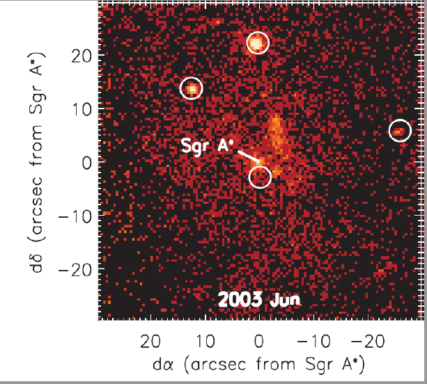
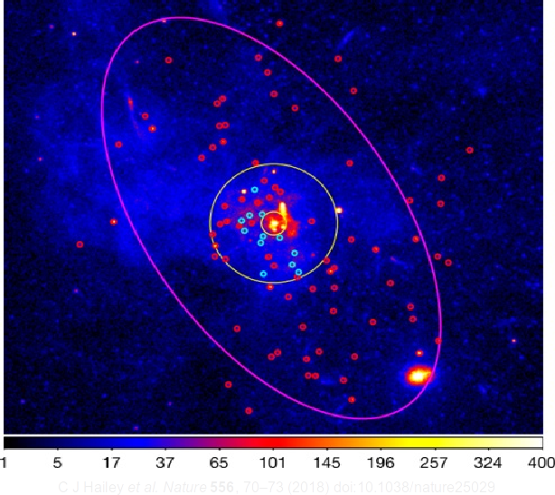
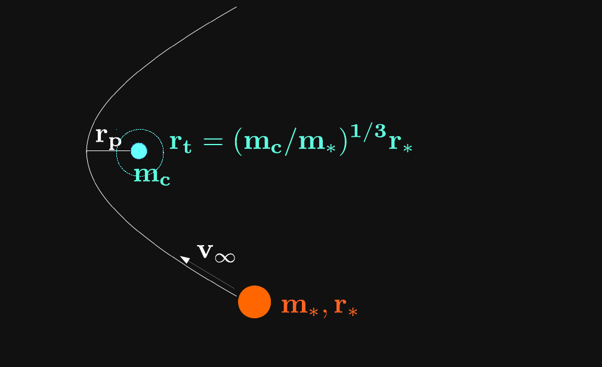
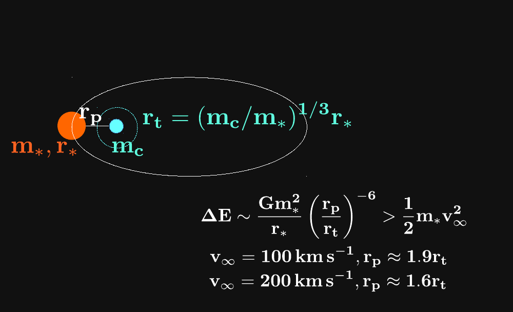

Exotica from Galactic Nuclei
Credits: R. Hurt/Caltech-JPL
X-ray binaries in the central parsec

Muno et al. 2005

Formation
-
BH XRBs / $\mathrm{M_*}$ $\sim 10^3$ times field
-
Likely not from (normal) binary evolution
- Dynamical formation
- Tidal capture! (Fabian+1975, Press+Teukolsky1977, Lee+Ostriker 1986)
Tidal capture physics

Tidal capture physics

Bottom line
-
Modeling suggests $\sim 10^4$ isolated BHs in central parsec
-
Plenty of opportunities for follow-up work exploring consequences of this
population!